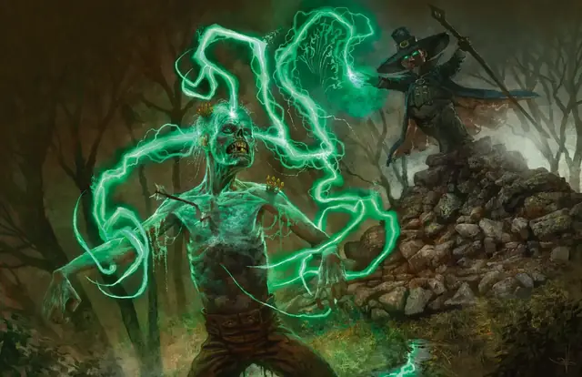

Ведьмин снаряд
Witch Bolt
1 уровень, Воплощение

Время сотворения Действие
Дистанция 60 футов
Компоненты В, С, М (ветка, поражённая молнией)
Длительность Концентрация, вплоть до 1 минуты
Классы Волшебник, Колдун, Чародей
Подклассы Реаниматор (Артефактор)
Луч потрескивающей энергии устремляется к существу в пределах дистанции, формируя между вами и целью непрерывный дуговой разряд. Совершите дальнобойную атаку заклинанием по этой цели. При попадании цель получает 2к12 урона Электричеством.
В каждый ваш последующий ход вы можете Бонусным действием нанести цели 1к12 урона Электричеством без совершения атаки, даже если первая атака промахнулась.
Заклинание оканчивается, если цель окажется за пределами дистанции заклинания или скроется от вас за Полным укрытием.
Используя ячейку заклинания большего уровня. Урон изначальной атаки заклинанием увеличивается на 1к12 за каждый уровень ячейки выше 1-го.